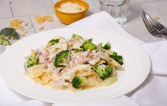

Boursin and Ham Pasta

Description
This creamy Boursin pasta with crispy bacon is quick and easy, perfect for busy weeknights!
Ingredients
- Boursin
- Heavy sauce
- Pasta
- Ham
- Parmesan
- Parsley
- Garlic
Steps
- Cook the pasta as you like them
- In a frying pan, fry the chopped ham and chopped garlic in some olive oil for a few minutes until ham is cooked and crisp
- Add the heavy cream and the boursin cheese
- Add Salt and Pepper
- Incorporate the cooked pasta into the sauce
- Add the chopped parsley and some parmesan in it
- Let it cook for 5 minutes at a low heating fire
- You can serve and eat